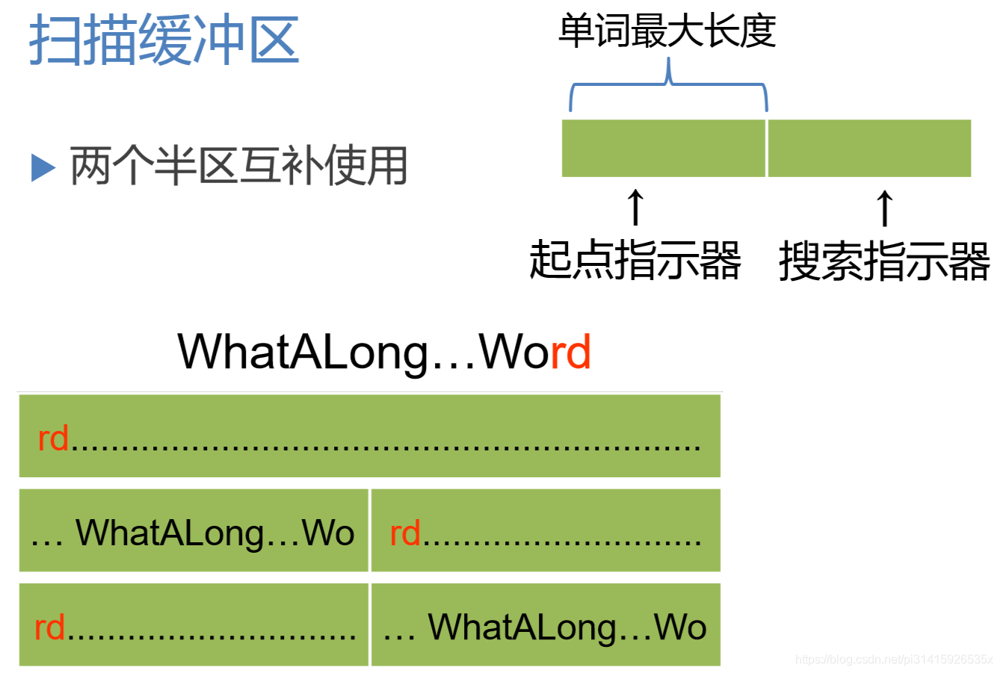

编译原理-第四、五、六章-词法分析
第四章 词法分析（一）
词法分析概述
词法分析的任务
词法分析的任务：从左至右逐个字符地对源程序进行扫描，产生一个个单词符号词法分析器(Lexical Analyzer)又称扫描器(Scanner)：执行词法分析的程序
词法分析器的功能
功能：输入源程序、输出单词符号
单词符号的种类：
基本字：如begin，repeat，for，…标识符：用来表示各种名字，如变量名、数组名和 过程名常数：各种类型的常数运算符：+，-，*，/，…界符：逗号、分号、括号和空白
词法分析器的输出
输出的单词符号的表示形式： (单词种别，单词自身的值) 一个二元组
单词种别通常用整数编码表示：
- 若一个种别只有一个单词符号，则种别编码就代表该单 词符号。假定
基本字、运算符和界符都是一符一种。 - 若一个种别有多个单词符号，则对于每个单词符号，给出种别
编码和自身的值。标识符单列一种；标识符自身的值表示成按机器字节划分的内 部码常数按类型分种；常数的值则表示成标准的二进制形式
词法分析器作为一个独立子程序
- 词法分析作为一个独立的
阶段：结构简洁、清晰和条理化，有利于集中考虑词法分 析一些枝节问题 - 但不一定不作为单独的一
遍：而是将其处理为一个子程序， 由语法分析驱动词法分析
4.2 词法分析器的设计
词法分析器的结构

扫描缓冲区
这里的扫描缓冲区使用两个半区互补使用， 半区的长度即为单词的最大长度
单词符号的识别:超前搜索
基本字需要超前搜索才能确定哪些是基本字。标识符识别：字母开头的字母数字串，后跟界符或算符常数识别：识别出算术常数并将其转变为二进制内码表示算符和界符的识别：把多字符组成的算符和界符拼合成一个单词符号
几点限制——不必使用超前搜索
所有基本字都是保留字;用户不能用它们作自己 的标识符基本字作为特殊的标识符来处理，使用保留字表- 如果基本字、标识符和常数(或标号)之间没有确 定的运算符或界符作间隔，则
必须使用一个空白符作间隔
对程序编写者的一些限制也是简化词法分析程序的设计以及是程序的阅读性增加。
状态转换图
状态转换图是一张有限方向图：
结点代表状态，用圆圈表示- 状态之间用
箭弧连结，箭弧上的标记(字符)代表射出 结状态下可能出现的输入字符或字符类 - 一张转换图只包含
有限个状态，其中有一个为初态（用双箭头表示）， 至少要有一个终态（用双圆圈表示）
状态转换图可用于识别(或接受)一定的字符串：
- 若存在一条从初态到某一终态的道路，且这条路上所有弧上的标记符连接成的字等于α，则称α被该状态转换图所识别(接受)
词法分析器的设计示例 （理解即可）
例如这样的一个单词表对应这样的一个状态转换图：
- 不含回路的分叉结点：可用一个
CASE语句或一组IF-THEN-ELSE语句实现 - 含回路的状态结点：对应一段由
WHILE结构和IF语句构成的程序 - 终态结点：表示识别出某种单词符号，对应
返回语句（此处的返回值是一个二元组（种别，自身值））
定义：
对于其中一个分支就可以写出如下的代码：
将状态图的代码一般化
- 变量
curState用于保存现有的状态 - 用二维数组表示状态图：
stateTrans[state][ch]
这样的一个一般化的框架就如下：

这里的返回值要根据具体的处理过程进行细节的处理，如关键字的处理、单词的处理、标识符的处理等等。
第五章 词法分析（二）
词法规则形式化-正规集和正规式
正规集和正规式
正规集可以用正规式表示。正规式是表示正规集一种方法- 一个字集合是
正规集当且仅当它能用正规式表示
正规集是一类字的集合，程序语言的定义的合法单词的集合
正规式和正规集的递归定义
对给定的字母表 Σ :
- ε 和 ∅ 都是 Σ Σ Σ 上的正规式，它们所表示的正规集为 { ε } 和 ∅ ;
- 任何 a ∈ Σ ， a 是 Σ 上的正规式，它所表示的正规集为 { a } ;
- 假定 e1 和 e2 都是 Σ 上的正规式，它们所表示 的正规集为 L ( e 1 )和 L ( e 2 ) ，则
- ( e 1 ∣ e 2 ) 为正规式，它所表示的正规集为 L ( e 1 ) ∪ L ( e 2 )
- ( e 1 . e 2 ) 为正规式，它所表示的正规集为 L ( e 1 ) L ( e 2 )
- ( e1 )*为正规式，它所表示的正规集为 ( L ( e1 ) ) *
仅由 有限次 使用上述三步骤而定义的表达式才是 Σ 上的正规式，仅由这些正规式表示的字 集才是 Σ上的正规集。
由以上规则可得：
- ε 是： 字 或 正规式
- ∅ 是： 集合 或 正规式
- a ( a ∈ Σ ) 是： 字符 或 字 或 正规式
正规式的等价性
若两个正规式所表示的正规集相同，则称这两 个正规式等价。如 b ( ab )* = ( ba )* b
证明：
利用正规式与正规集的对应关系，证明 ( a* b* ) * = ( a ∣ b )* = ( a* ∣ b* )* ：可以看出每一个正规式表示的都是由 ab组成的所有串的集合，所以是等价的
正规式的性质
对正规式，下列等价成立：
- e1 ∣ e2 = e2 ∣ e1 交换律
- e1 ∣ ( e2 ∣ e3 ) = ( e1 ∣ e2 ) ∣ e 3 结合律
- e1 ( e2 e3 ) = ( e1 e2 ) e3 结合律
- e1 ( e2 ∣ e3 ) = e1 e2 ∣ e1 e3 分配律
- ( e2 ∣ e3 ) e1 = e2 e1 ∣ e3 e1 分配律
- e ε = ε e = e
- **注意乘么的交换律 e1 e2 < > e2 e1 **
证明过程：转化为集合运算来证明即可
5.2 确定有限自动机(DFA)
对状态图进行形式化定义
确定有限自动机(DeterministicFiniteAutomata， DFA) M M M 是一个五元式 M = ( S , Σ , f , S0 , F ) , 其中：
- S :有穷
状态集 - Σ ：输入
字母表(有穷) - f :
状态转换函数，为 S × Σ → S 的单值部分映射， f ( s ， a ) = s ′ 表示：当现行状态为 s ，输入字符为 a 时，将状态转换到下一状态 s′ ，s′ 称为 s 的一个后继状态 - S0 ∈ S 是
唯一的一个初态 - F ⊆ S ：
终态集(可空)
DFA表示为状态转换图
假定 DFA M 含有 m个状态 和 n个输入字符 ，则对应的状态转换图含有 m个状态结点 ，每个结点顶多含有 n条箭弧射出 ，且每条箭弧用 Σ 上的不同的输 入字符来作标记
DFA识别字符串的定义
- 对于 Σ* 中的任何字 α ，若存在一条从初态到某一 终态的道路，且这条路上所有弧上的标记符连接成的字等于 α ，则称 α 为 DFA M 所
识别(接收) - DFA M 所识别的字的全体记为 L ( M )
例如一个识别以 00 结尾的字符串的DFA：
将DFA中的各个状态函数写成矩阵的形式，也就是状态矩阵，这样就可以利用前面的词法分析程序：
5.3 非确定有限自动机（NFA）
非确定有限自动机（NFA）的定义
一个简单的NFA状态图： 
（大部分定义与DFA一致）
一个 非确定有限自动机 (Nondeterministic Finite Automata，NFA) M M M 是一个五元式 M = ( S , Σ , f , S 0 , F ) M=(S, Σ, f, S_0, F) M=(S,Σ,f,S0,F) ，其中：
- S S S :有穷
状态集 - Σ Σ Σ ：输入
字母表(有穷) - f f f :
状态转换函数，为 S × Σ ∗ → 2 S \color{#0CF}{S×Σ^*→2^S} S×Σ∗→2S 的部分映射 这里的 2 S 2^S 2S 指的是 S S S 的幂级，即 S S S 所有的子集的集合 ，这样就表明从一个状态出发可能有多个不同的状态，体现非确定这一特点 - S 0 ⊆ S \color{#0CF}{S_0⊆S} S0⊆S 是非空的
初态集，这里与 DFA 不同，DFA处的 S 0 S_0 S0 的定义是 属于 某个状态集合，而这里是某一 些 集合作为自动机的初态，这也体现着非确定这一特点 - F ⊆ S F⊆S F⊆S ：
终态集(可空)
（个人理解：可以将自动机看作一幅图（网络），每个节点代表一种状态，边权为符合某一值时表示联通，DFA每个节点出发的边的限制条件不同，且为字符限制，而NFA的每一个节点出发的边的限制条件可以相同，即多个通路，而且是字符串的限制，并且前者仅有一个源点，后者可以有多个源点 （一个不显示的超级源点？？嘿嘿） ）
从状态图看NFA和DFA的区别
- NFA可以有多个
初态 - 弧上的标记可以是 Σ ∗ Σ^* Σ∗ 中的一个
字(甚至可以是一个正规式)，而不 一定是单个字符 同一个字可能出现在同状态射出的多条弧上
DFA是NFA的特例
NFA识别字符串的定义
- 对于 Σ ∗ Σ^* Σ∗ 中的任何字 α α α ，若存在一条从初态到某一终态的道路，且这条路上所有弧上的标记字连 接成的字等于 α α α (忽略那些标记为 ε ε ε 的弧)，则称 α α α为NFAM所
识别(接收) - NFA M所识别的字的全体记为 L ( M ) L(M) L(M)
一个识别含有aa或bb的字符串的NFA：
可以看出左图的DFA也可以完成相同的功能；
一个识别特定语言的NFA：

DFA和NFA
- 定义：对于任何两个有限自动机M和 M ′ M’ M′ ，如果 L ( M ) = L ( M ′ ) L(M)=L(M’) L(M)=L(M′) ，则称 M M M 与 M ′ M’ M′
等价 - 自动机理论中一个重要的结论：
判定两个自动机等价性的算法是存在的 - 对于每个NFA M存在一个DFA M ′ M’ M′ ，使得 L ( M ) = L ( M ′ ) L(M)=L(M’) L(M)=L(M′)
DFA与NFA识别能力相同!（如上面的那个识别含有aa或bb字符串的自动机）
第六章 词法分析（三）
6.1 有限自动机的等价性
DFA与NFA的等价性
对于每个NFA M M M 存在一个DFA M ′ M’ M′，使得 L ( M ) = L ( M ′ ) L(M)=L(M’) L(M)=L(M′) ，包括： 等价性证明 和 NFA的确定化
可以从 **NFA 和DFA的差别 ** 入手：
所以只要消除差别就可以实现两者的转化，也就是等价
DFA与NFA的等价性证明
等价性证明

假定NFA M = < S , Σ , δ , S 0 , F > M=<S, Σ, δ, S_0, F> M=<S,Σ,δ,S0,F> ，我们对M的状态转换图进行以下改造：
-
引进新的初态结点 X X X 和终态结点 Y Y Y ， X , Y ∉ S X,Y∉S X,Y∈/S ，从 X X X 到 S 0 S_0 S0 中任意状态结点连一条 ε ε ε 箭弧，从 F F F 中任意状态结点连一条 ε ε ε 箭弧到 Y Y Y
（类似一个超级源点和超级汇点）。 (解决初始状态唯一性)
-
对M的状态转换图进一步施行替换，其中k是新引入的状态。 (简化弧上的标记) 。 例如拆分的替代：

对于我们现在的这个NFA：

-
逐步把这个图转变为每条弧只标记为 Σ Σ Σ 上的一个字符或 ε ε ε ，后得到一个NFA M ′ M’ M′ ，显然 L ( M ′ ) = L ( M ) L(M’)=L(M) L(M′)=L(M)
NFA的确定化-子集法(解决ε弧和转换关系)
ε − c l o s u r e ( I ) ε-closure(I) ε−closure(I) 的定义
设 I I I 是的状态集的一个子集，定义 I I I 的 ε − 闭 包 ε-闭包 ε−闭包 ε − c l o s u r e ( I ) ε-closure(I) ε−closure(I) 为:
- 若 s ∈ I s∈I s∈I ，则 s ∈ ε − c l o s u r e ( I ) s∈ε-closure(I) s∈ε−closure(I) ；
- 若 s ∈ I s∈I s∈I ，则从s出发经过任意条ε弧而能到达的任何状态 s ′ s’ s′ 都属于 ε − c l o s u r e ( I ) ε-closure(I) ε−closure(I)
即， ε − c l o s u r e ( I ) = I ∪ { s ′ ∣ 从 某 个 s ∈ I 出 发 经 过 任 意 条 ε 弧 能 到 达 s ′ } ε-closure(I)=I∪\{s’|从某个s∈I出发经过任意条ε 弧能到达s’\} ε−closure(I)=I∪{s′∣从某个s∈I出发经过任意条ε弧能到达s′}
I a = ε − c l o s u r e ( J ) I_a= ε-closure(J) Ia=ε−closure(J) 的定义
设a是Σ中的一个字符，定义 I a = ε − c l o s u r e ( J ) I_a= ε-closure(J) Ia=ε−closure(J) 其中，J为I中的某个状态出发经过一条a弧而到达的状态集合。 
eg:
NFA的确定化
确定化：不失一般性，设字母表只 包含两个a 和b，我们构造一张计 算状态集的转换表:
- 首先，置第1行第1列为εclosure({X})求出这一列的Ia，Ib；
- 然后，检查这两个Ia，Ib，看它 们是否已在表中的第一列中出 现，把未曾出现的填入后面的 空行的第1列上，求出每行第2， 3列上的集合…
- 重复上述过程，直到所有第2， 3列子集全部出现在第一列为止

注意，这里如果右边出现空集，左边I这列也要计算空集；此外，因为是有限自动机，故左边的计算出的项最多有 2 n 2^n 2n 个，所以一定会计算完
例如：对于上面的 NFA M’ 的计算结果就是如下：
- 把表看成状态转换矩阵，子集视为状态
- 转换表唯一刻划了一个确定 的有限自动机M，其中：初态是ε-closure({X}) 、终态是含有原终态Y的子集
- 并将集合进行一定的标号，即可得到一个新的状态转移矩阵，同样可以得到一个新的状态转换图：

而这个状态转换图对应的显然是一个 DFA，不难看出，这个DFA M与M’ 等价 ，对于每个NFA M存在一个 DFA M’ ，使得L(M)=L(M’) ，也就是说，NFA和DFA等价
确定有限自动机的化简
- DFA的化简(最小化) ：对于给定的DFA M，寻找一个状态数比M少的DFA M’，使得L(M)=L(M’)
- 状态的等价性：
- 假设s和t为M的两个状态，称s和t等价：如果从状态 s出发能读出某个字α而停止于终态，那么同样，从t 出发也能读出α而停止于终态；反之亦然
- 两个状态不等价，则称它们是可区别的
- 两个状态不等价是指： 存在一个字α ，要么s读出α停止于终态而t读出 α停止于非终态，要么t读出α停止于终态而s读 出α停止于非终态
- 化简的基本思想：把M的状态集划分为一些 不相交的子集 ，使得任何 两个不同子集的状态是可区别的 ，而 同一子集的任何两个状态是等价的 ，最后，让每个子集选出一个代表，同时消去其他状态。所以，对DFA的状态集合S进行第一次划分是 终态 和 非终态 。
化简的方法
-
首先，把S划分为 终态 和 非终态 两个子集，形成 基本划分 Π Π Π 。
-
假定到某个时候， Π Π Π 已含 m m m 个子集，记为 Π = { I ( 1 ) ， I ( 2 ) ， … ， I ( m ) } Π=\{I^{(1)}， I^{(2)}，…，I^{(m)}\} Π={I(1)，I(2)，…，I(m)} ，检查 Π Π Π 中的每个子集看是否能进 一步划分： 对某个 I ( i ) I^{(i)} I(i) ，令 I ( i ) = { s 1 , s 2 , … , s k } I^{(i)}=\{s_1,s_2, …,s_k\} I(i)={s1,s2,…,sk} ，若存在一个输入字符 a a a 使得 I a ( i ) I_a^{(i)} Ia(i) 不会包含在现行 Π Π Π 的某个子集 I ( j ) I^{(j)} I(j) 中，则至少应把 I ( i ) I^{(i)} I(i) 分为 两个部分。
-
假定状态 s 1 s_1 s1 和 s 2 s_2 s2 是 I ( i ) = { s 1 , s 2 , … , s k } I^{(i)}=\{s_1,s_2, …,s_k\} I(i)={s1,s2,…,sk} 中的两个状态， 它们经 a a a 弧分别到达 t 1 t_1 t1 和 t 2 t_2 t2 ，而 t 1 t_1 t1 和 t 2 t_2 t2 属于现行 Π Π Π 中的两个不同子集（看图理解）
- 说明有一个字 α α α ， t 1 t_1 t1 读出 α α α 后到达终态，而 t 2 t_2 t2 读出 α α α 后 不能到达终态，或者反之
- 那么对于字 a α aα aα ， s 1 s_1 s1 读出 a α aα aα 后到达终态，而 s 2 s_2 s2 读出 a α aα aα 不能到达终态，或者反之
- 所以 s 1 s_1 s1 和 s 2 s_2 s2 不等价

-
将 I ( i ) I^{(i)} I(i) 分成两半，一半含有 s 1 s_1 s1 ，一半含有 s 2 s_2 s2
- I ( i 1 ) I^{(i1)} I(i1) 含有 s 1 s_1 s1 : I ( i 1 ) = { s ∣ s ∈ I ( i ) } I^{(i1)}=\{s|s∈I^{(i)}\} I(i1)={s∣s∈I(i)} 且s经a弧到达t, 且t与 t 1 t_1 t1 属于现行 Π Π Π 中的同一子集}
- I ( i 2 ) I^{(i2)} I(i2) 含有 s 2 s_2 s2 : I ( i 2 ) = I ( i ) − I ( i 1 ) I^{(i2)}=I^{(i)}-I^{(i1)} I(i2)=I(i)−I(i1)
-
一般地，对某个 a a a 和 I ( i ) I^{(i)} I(i) ，若 I a ( i ) I_a^{(i)} Ia(i) 落入现行 Π Π Π 中N 个不同子集，则应把 I ( i ) I^{(i)} I(i) 划分成N个不相交的组， 使得每个组 J J J 的 J a J_a Ja 都落入的 Π Π Π 同一子集。
-
重复上述过程，直到 Π Π Π 所含子集数不再增长
-
对于上述后划分 Π Π Π 中的每个子集，我们选取 每个子集 I I I 中的一个状态代表其他状态，则可得 到化简后的DFA M ′ M’ M′
-
若 I I I 含有原来的 初态 ，则其代表为 新的初态 ，若 I I I 含有原来的 终态 ，则其代表为 新的终态 。
eg: 我们对上面的那个 DFA M’ 进行不断的化简，首先分成两个集合：终态和非终态集合： I ( 1 ) 和 I ( 2 ) I^{(1)} 和 I^{(2)} I(1)和I(2) ，对他们求子集。。。。（红蓝两色即为分解中出现某个集合出现在多个状态集中，需要分解的过程）：
对最后化解后的集合重新标号，可以得到一个化解后的状态转换图：
6.2 正规式与有限自动机的等价性
上面一节证明了 有限自动机间的等价性，表明 DFA 和 NFA 是可以相互转化的，其识别的字是相同的，而 NFA 对于设计人员来说更加友好，因为不用对转换关系考虑的更加细致，易于设计；而 DFA 对开发词法分析程序更加友好，因为更加的简单，清晰，这样我们可以由语言的 单词正规集 得到 正规式， 然后设计处 NFA ，最后利用 有限自动机的等价性来实现 NFA 向 DFA 的转化和化解，从而设计出此法分析程序。（也就是这个图)
这节证明正规式与有限自动机之间的等价性。
正规式与有限自动机的等价性（结论）
- 一个正规式r与一个有限自动机M等价： L ( r ) = L ( M ) L(r)=L(M) L(r)=L(M)
- FA ->正规式 ：对任何FA M，都存在一个正规式r，使得 L ( r ) = L ( M ) L(r)=L(M) L(r)=L(M) 。
- 正规式-> FA ：对任何正规式r，都存在一个FA M，使得 L ( M ) = L ( r ) L(M)=L(r) L(M)=L(r)。
为NFA构造正规式
对转换图概念拓广，令每条弧可用一个正规式作标记。
证明 ：对 Σ Σ Σ 上任一NFA M M M ，都存在一个 Σ Σ Σ 上的 规式 r r r ，使得 L ( r ) = L ( M ) L(r)=L(M) L(r)=L(M) 。
- 假定NFA M = < S , Σ , δ , S 0 , F > M=<S, Σ, δ, S_0, F> M=<S,Σ,δ,S0,F>，我们对M的状 态转换图进行以下改造：
在M的转换图上加进两个状态X和Y，从X用ε弧连接 到M的所有初态结点，从M的所有终态结点用ε弧连 接到Y，从而形成一个新的NFA，记为 M ’ M’ M’ ，它只有一 个初态X和一个终态Y，显然 L ( M ) = L ( M ’ ) L(M)=L(M’) L(M)=L(M’) 。 - 然后，反复使用下面的三条规则，逐步消去结点， 直到只剩下X和Y为止。

- 最后，X到Y的弧上标记的正规式即为所构造的 正规式r，显然 L ( r ) = L ( M ’ ) = L ( M ) L(r)=L(M’)=L(M) L(r)=L(M’)=L(M) ，得证：对 Σ Σ Σ 上任一NFA M M M ，都存在一个 Σ Σ Σ 上的正规式 r r r ，使得 L ( r ) = L ( M ) L(r)=L(M) L(r)=L(M) 。
为正规式构造NFA
- 定理：对任何正规式r，都存在一个FA M，使 得 L ( M ) = L ( r ) L(M)=L(r) L(M)=L(r) 。
- 定理: 对于 Σ Σ Σ 上的正规式r，都存在一个NFA M， 使 L ( M ) = L ( r ) L(M)=L(r) L(M)=L(r) ，并且M只有一个初态和一个终态， 而且没有从终态出发的箭弧。
- 证明： 对给定正规式r中的运算符数目进行归纳 * 验证r中的运算符数目为0时，结论成立。 * 假设结论对于运算符数目少于k(k≥1)的正规式成立 * 基于该假设，证明结论对于运算符数目为k的正规式 成立。


正规式向NFA的转化过程
- 上述证明过程实质上是一个将 正规表达式 转换为 有限自动机 的算法 ，如构造 Σ Σ Σ 上的NFA M ’ M’ M’ 使得 L ( r ) = L ( M ’ ) L(r)=L(M’) L(r)=L(M’)
- 首先，把r表示成一个初态为X、终态为Y并且转换条件是r的 NFA

- 然后按照如下规则不断地对 r 进行分裂 （就是上面 NFA向r转换的三条规则的逆过程）

- 逐步把这个图转变为每条弧只标记为 Σ Σ Σ 上的一个字符或 ε ε ε ，最后得到一个NFA M ’ M’ M’ ，显然 L ( M ’ ) = L ( r ) L(M’)=L(r) L(M’)=L(r)
eg: 例如上面一直使用的一个 NFA/DFA 用 正规式r表示的情况：
当我们得到一个想要的字的正规式r时，就可以将正规式转化为一个NFA，然后利用上一讲6.1的有限自动机的转化就可以将一个NFA利用子集法转化为一个DFA并化解，这样我们就清楚了整个词法分析程序生成的主要过程的理论。


6.3 词法分析程序自动生成–LEX
利用LEX设计词法分析程序的整个流程如下
LEX的源文件格式包括：辅助定义（紫色）和识别规则（正规式+一小段的程序代码）（蓝色）
LEX的工作过程：
下面的流程图就是词法分析的大致流程。每个箭头之间的内部转化一次证明都已经在前面几章、讲介绍了。
习题
这14题我看傻了，，，

(end)